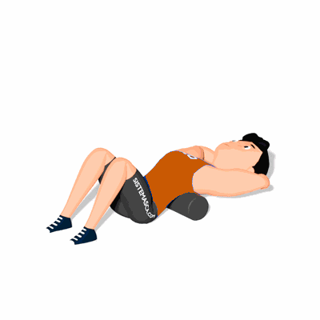

Abdominal com Foam Roller

Exercício para fortalecimento e hipertrofia da região abdominal. Indicado a praticante de musculação nível iniciante e intermediário.
Ficha Técnica
Tipo: Funcional
Grupo Muscular: Abdome
Aparelho: Nenhum
Músculos: Nenhum
Como realizar
- Deite-se de barriga para cima e apoie as costas sobre um Foam Roller;
- Mantenha os joelhos flexionados, pés ligeiramente separados;
- Coloque as mãos entrelaçadas atrás do pescoço;
- Inspire e eleve os ombros em direção ao joelho;
- Expire lentamente e retorne à posição inicial.
 RC STORE
RC STORE